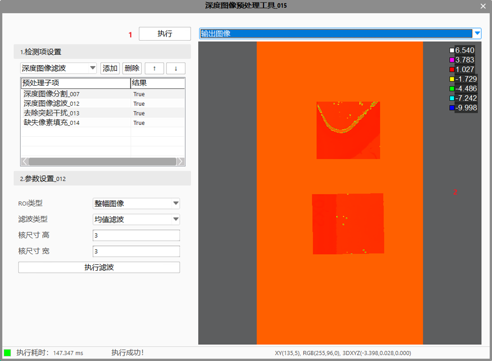

深度图像预处理工具的功能是：对输入的原始深度图像（有噪点干扰），通过此工具的一系列预处理后，输出所需要的的深度图像（去除噪点等干扰），方便后续的测量或检测。 工具包含五个预处理子项：深度图像滤波、深度图像分割、去除突起干扰、缺失像素填充、点云自由曲面抽取。
深度图像滤波工具主要是将深度图像中每个像素替换为该点邻域窗口内所有像素的均值或中值，实现图像平滑、去噪的功能 。
应用场景：去除3D相机采集由于材质、反光会成像算法等造成的干扰点。此工具仅能处理较小、零散的噪声。
深度图像分割工具主要是将深度图像中感兴趣区域内的深度信息分割出来。图1所示为，将深度图像中的物体从背景中分割出来。
不适用场景：
去除突起干扰工具的功能是：去除深度图像中的干扰数据点（干扰数据点，即深度图像中明显高于或低于周围的点，通常是噪声干扰点），并在去除后，通过邻域范围内的有效数据点，对干扰数据点的位置进行填充，提高深度图像的完整性。
适用场景：突起干扰与周围数据有明显不同时；
不适用场景：突起干扰与周围有效数据无法区分；

缺失像素填充工具的功能是：由于深度图像的每一个像素并不总是拥有一个有效深度值，对缺失像素的邻域或全图进行分析，计算出一个新的深度值填充无效像素，提高整幅图像的完整性和有效性。
自由曲面工具主要是对原深度数据图像中的部分曲面提取出来，目前工具无法输出曲面类型，仍是以深度图像的形式来输出提取的曲面。此工具一般与点云高度抽取工具或平面高度检测工具搭配使用，来检测曲面上的凹凸缺陷。
| 参数名称 | 参数描述 |
|---|---|
| 输入深度图像数据 | 输入待处理的深度图像。 |
| 二维线性变换 | 目标相对于模板的平移、旋转、变换，该参数可来源于点云定位工具。 |
| 基准面1/2/3 | 深度图像分割子项（平面偏移模式）所需要的基准面候选项，深度图像分割子项参数设置时可引用这三个候选的基准面。 |
目前支持五种预处理项：深度图像滤波、深度图像分割、去除突起干扰、缺失像素填充、点云自由曲面抽取。
列表中子项遵循以下规则：
前一项的输出深度图像是后一项的输入深度图像。
若前一个工具若执行失败，则后面所有的预处理子项跳过执行，最终工具输出执行失败结果。
选中列表子项后，图像窗口显示该子项的输入、输出深度图像图像，方便用户一边观察结果一边调参。若要看工具最终执行结果，直接点击执行即可查看工具最后输出的深度图像图像。
点击列表中的滤波子项，列表下方显示深度图像滤波参数：
| 参数名称 | 参数描述 |
|---|---|
| ROI类型 | 支持的 ROI类型：整幅图像、矩形ROI、仿射矩形ROI、圆形ROI、圆环段ROI和多边形ROI |
| 滤波类型 | 目前支持中值滤波和均值滤波 |
| 核尺寸 高 | 滤波核（邻域窗口）的高度 |
| 核尺寸 宽 | 滤波核（邻域窗口）的宽度 |
滤波类型：中值滤波会将邻域内深度值排序后的中间值替代当前位置的深度值；均值滤波会将邻域内所有深度值的均值替代当前位置的深度值。
注意：目前版本的算法，当噪点邻域为缺失像素时，直接使用滤波工具噪点滤除不掉。有个替代方案实测可行：先进行缺失像素固定值填充（一般填充一个特别大的值），再进行滤波，最后使用点云分割工具将之前填充的固定值去除，达到效果。如下图所示：

点击列表中的分割子项，列表下方显示深度图像分割参数：
配置合适的ROI。支持整幅图像、矩形ROI、仿射矩形ROI、多仿射矩形ROI、圆形ROI、椭圆ROI
选择阈值模式。有两种模式：深度值和平面偏移。如下图所示，深度值依据直接利用深度图像的深度值信息对图像进行分割，而平面偏移依据是利用深度图像的像素点到指定平面的偏移信息对图像进行分割。平面偏移模式时，需要引用基准面1/2/3（主工具需要事先配置好基准面1/2/3）,以此引用的基准面来进行分割。如上图子项引用了基准面1，基准面1链接的是“通用平面拟合工具_014.拟合平面”。
选择阈值范围并配置距离上下限（mm）。选择“范围内”，最终输出的是ROI区域中距离上/下限以内的点集的深度图。选择“范围外”，最终输出的是ROI区域中距离上/下限以外的点集的深度图。选择“全部范围”，最终输出的是ROI区域中的所有点集的深度图。
比如：给定的距离下限和距离上限分别为a和b（a≤b），则阈值范围内代表的分割区间为[a, b]，范围外代表的分割区间为(-∞,a]U[b, +∞)，全部范围则代表分割区间为（-∞，+∞）。
点击列表中的去除突起干扰子项，列表下方显示去除突起干扰参数：


配置合适的ROI。支持整幅图像、矩形ROI、仿射矩形ROI、圆形ROI、椭圆ROI
选择去除对象，分为高、低以及高低对象。
高：只去除相对于周围数据点较高的突起点，如下图中红色点所示。
低：只去除相对于周围数据点较低的突起点，如下图中黄色点所示。
高低：去除相对于周围较高和较低的两种突起点，如下图中红色和黄色点所示。

选择去除方向，分为X、Y、XY方向。
X方向：沿图像的X方向去除突起数据点，留下Y方向的突起数据点。
Y方向：沿图像的Y方向去除突起数据点，留下X方向的突起数据点。
XY方向：分别去除图像的X和Y方向的突起数据点。
设置去除突起数据点数量X/Y。
设置去除阈值，去除阈值指允许突起数据点到基准点的最大高度值，大于去除阈值的突起点将会被去除，如下图所示。
扩展参数
子项自带填充功能，点击“>>”按钮，可配置填充参数，仅针对去除掉的像素部分进行填充，具体设置可参考下面缺失像素填充参数设置。
缺失像素填充方式分为线性填充与非线性填充两种模式。
线性填充的本质是对缺失像素的邻域有效像素或全图像素进行分析，为缺失像素计算深度值。因此，深度值计算方式可分为邻域模式和全局模式。
选择深度值计算方法。支持邻域模式（邻域最大、邻域最小、邻域插值）与全局模式两种。
邻域模式：通过分析缺失像素的邻域像素来计算缺失像素的深度值。具体来说，邻域模式包括邻域最大、邻域最小、邻域插值三种模式。其中，邻域最大/邻域最小以缺失像素邻域范围内最大/最小的深度值作为处理结果。邻域插值基于邻域像素的位置和深度进行线性插值。
全局模式：通过分析全图中所有有效像素来计算缺失像素的深度值，包括全局最大、全局最小、全局平局和固定值四种方法。全局最大/全局最小/全局平均以全图的最大/最小/平均有效像素值来填充所有无效像素。固定值方法以用户输入的数值填充缺失像素。

配置合适的ROI。支持整幅图像、矩形ROI、仿射矩形ROI、圆形ROI、椭圆ROI。
选择非线性填充方法，目前目前包括：平滑填充和边缘保持填充两种方式。顾名思义，平滑填充，在缺失像素的填充过程中，像素的深度值是平滑过渡的，适用于平坦区域的缺失像素填充；边缘保持填充，则在填充过程中，可以对物体的边缘信息有较好的保留。具体示意图如上图(a)和(b)所示。
若选择平滑填充，则只需要设置计算次数。计算次数：对缺失像素进行填充时，需要对待填充像素的深度值计算的次数。一般设置为200~1000次左右，默认值为1000（保持默认值亦可）。如上图©所示，随着计算次数的增加，缺失像素的填充效果不断改善。但达到一定次数后，填充效果不会再提升。
若选择边缘保持填充，则还需要设置一下几个参数：
第一步：选择填充模式：边缘保持填充方法下的几种填充模式，主要包括：Parabolic，PeronaMailk，Weickert，Shock等几种填充模式。几种模式的特点以及适用场景可参考下方表格。
第二步：更新步长：每一次迭代计算新填充值时，更新的步长大小。更新步长默认为1，更新步长一般增大到10即可；
第三步：计算次数：先把计算次数设一个较大值，如5000，10000，确保后续调参时，效果不会受到计算次数不够而达不到填充效果。
第四步：平滑强度：深度图像填充过程中，对图像进行平滑滤波的强度，图像中噪声干扰越大，对应的平滑强度需增大。Shock模式下平滑强度一般设置为3，根据实际的填充效果，如果待填充区域的填充结果有较大的块状区域，需增大平滑强度；Parabolic, Parabolic Mailk和Weickert模式下的平滑强度一般设置小于1，根据采集的深度图像的质量，以及实际的填充结果（待填充区域的填充结果有较大的块状区域），此时可适当增大平滑强度。
第五步：边缘高度阈值（原名：对比度阈值）邻域像素高度差大于阈值的区域被认为边缘。上图(d)所示为，边缘高度阈值设置为40时，平坦区域与边缘区域划分的一个结果。值得注意的是，一个像素既可以与其邻域像素构成平坦区域，也可以同时与其他邻域像素构成边缘区域。例如：上图(d)中56与78的梯度值为28，小于边缘高度阈值，此时56对应的像素与78对应的像素构成平坦区域；同时，78与130的梯度值为52，此时78对应的像素与130对应的像素构成边缘区域。
实际项目中边缘高度阈值需要多次调试，才能得到需要的值。可以通过效果了解到参数过大还是过小，阈值过大会出现如左图的效果，边缘部分过于塌陷或粘连；阈值过小会出现右图现象，出现好几层边缘。


边缘高度阈值的设置需根据边缘梯度差来确定，具体可参照边缘高度阈值的定义；一般而言，随着边缘高度阈值减小，边缘保持效果可以得到提高，如上图(e)所示。
第五步：shock滤波比重：Shock填充模式下，缺失像素填充值由图像的平滑滤波值和Shock滤波值按比例相加计算得到。Shock滤波比重为：填充结果中，Shock滤波所占的比重大小，其取值范围为[0, 1]。如果Shock滤波比重为0，则代表填充结果由图像平滑滤波计算而成，如果Shock滤波比重为1，则代表填充结果由Shock滤波计算而成。该参数仅在边缘保持填充方法下的Shock模式下设置。如上图(f)所示，为Shock比例与填充区域内边缘保持效果的大致关系：一般而言，随着Shock滤波比重的增加，边缘保持效果可以得到提高。
第六步：计算次数：慢慢把计算次数降下来，在不影响处理效果的前提下减少工具耗时。
下表为边缘保持填充下的几种方法特点以及适用场景，用户可根据最终需要达到的填充效果对方法进行选用。
| 填充方法 | 填充模式 | 方法特点 | 适用场景 |
|---|---|---|---|
| 平滑填充 | 平滑填充 | 填充结果与周围像素之间平滑过渡 | 适用于平坦区域内的缺失像素填充，包括水平区域和倾斜区域等。需对迭代次数进行设置，根据区域大小一般设置为200-1000左右。 |
| 边缘保持填充 | Parabolic | 填充结果可以减缓缺失像素在边缘处的平滑过渡，但不能完全消除平滑效应 | 建议优先使用Shock模式和PeronaMalik模式对深度图像进行填充 |
| PeronaMalik | 填充结果可以基本消除缺失像素在图像边缘处的平滑效应。耗时相对Weickert较短 | 适用边缘区域内的缺失像素填充，其中边缘区域可处于水平区域内部或倾斜区域内部。该模式需要对迭代次数，迭代步长，边缘高度阈值，平滑强度等参数进行设置 | |
| Weickert | 填充结果可以基本消除缺失像素在图像边缘处的平滑效应。耗时相对PM较长 | 适用边缘区域内的缺失像素填充，其中边缘区域可处于水平区域内部或倾斜区域内部。该模式需要对迭代次数，迭代步长，边缘高度阈值，平滑强度等参数进行设置 | |
| Shock | 填充结果可以较好地消除缺失像素在图像边缘处的平滑效应 | 适用于水平区域内的缺失像素填充（包括平坦区域和边缘区域）。但是不适用于倾斜区域内存在缺失像素的填充。该模式需要对迭代次数，迭代步长，边缘高度阈值，平滑强度等参数进行设置 |
配置合适的ROI。支持整幅图像、矩形ROI、仿射矩形ROI、圆形ROI、圆环段ROI、椭圆ROI、多边形ROI、多仿射矩形ROI。
选择抽取方向。指定抽取自由曲面的方向，包括X、Y和XY方向。X方向指抽取面是按照对深度图像逐行进行计算获得自由曲面的；Y方向是按照对深度图像逐列进行计算获得自由曲面的；XY方向是指在X、Y方向都有计算深度图像数据获得自由曲面。
设置抽取大小。设置值越小，越能贴合起伏较大的曲面，从而抽取的曲面更细致。效果如下图所示：
选中列表子项后，图像窗口显示该子项的输入、输出深度图像图像，方便用户一边观察结果一边调参:
若要看工具最终执行结果，直接点击执行即可查看工具最后输出的深度图像图像。

| 参数名称 | 参数描述 |
|---|---|
| 输出深度图像 | 输出预处理后的深度图像 |
| 执行结果 | 工具执行结果 |
| 执行时间 | 工具执行时间 |
| 现象描述 | 解决办法 |
|---|---|
| 点云自由曲面抽取执行未发生变化 | 放大抽取大小，越小越贴近曲面 |
参见“\Samples\3D\深度图\深度图像预处理工具.gvp”